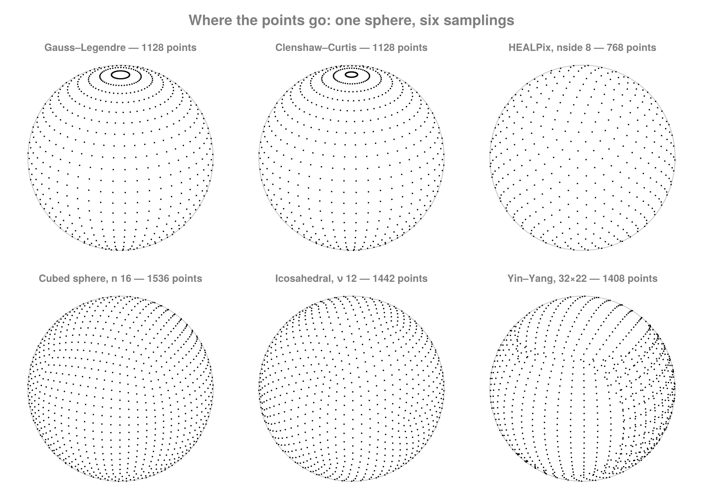

Spherical Sampling
A sampling answers: where are the points? It is independent of the metric and of how the data is stored.
The families
| sampling | layout | points | notes |
|---|---|---|---|
GaussLegendreSampling | tensor product | (2N−1) × N | exact quadrature to lmax = N−1 |
DriscollHealySampling | tensor product | 2N × N | equiangular, includes the north pole |
DriscollHealyEqualSampling | tensor product | N × N | the square DH1 layout |
ClenshawCurtisSampling | tensor product | (2N−1) × N | open — no polar points |
McEwenWiauxSampling | tensor product | (2L−1) × L | ~half the samples of classical DH |
LatLonSampling | tensor product | arbitrary | regional or global; no spectral claim |
HEALPixSampling | iso-latitude rings | 12·nside² | equal area by construction |
CubedSphereSampling | 6 panels | 6n² | quasi-uniform |
IcosahedralSampling | geodesic | 10ν²+2 | quasi-uniform; hexagonal dual |
YinYangSampling | 2 overlapping panels | 2·nlon·nlat | no polar singularity |
ScatteredSphericalSampling | arbitrary | any | for NUFFT-style paths |

Gauss–Legendre and Clenshaw–Curtis put their points on iso-latitude rings that crowd toward the poles; HEALPix, the cubed sphere and the icosahedral geodesic are quasi-uniform. Yin–Yang is two overlapping panels, which is why it has no polar singularity.
Traits
Rather than testing types, ask:
FG.SphericalSampling.is_tensor_product(s) # fits an (nlon × nlat) structured grid?
FG.SphericalSampling.is_iso_latitude(s) # points lie on rings of constant φ?
FG.SphericalSampling.is_equal_area(s) # every cell the same area?
FG.SphericalSampling.admits_exact_bandlimited_quadrature(s) # weights integrate PRODUCTS exactly at `bandlimit`?trueThat last one is deliberately strict. Spectral analysis forms products of two degree-lmax fields, so it needs exactness to degree 2·lmax, not lmax:
| sampling | exact for a single Pₗ | bandlimit | needs | exact? |
|---|---|---|---|---|
| Gauss–Legendre | 2N−1 | N−1 | 2N−2 | yes |
| Driscoll–Healy | N−1 | N/2−1 | N−2 | yes |
| Clenshaw–Curtis | N−1 | N−1 | 2N−2 | no |
Clenshaw–Curtis's band limit describes what its grid can represent; its quadrature only supports analysis to about (N−1)/2. Use Gauss–Legendre when the analysis has to be exact.
Sizing
FG.SphericalSampling.bandlimit(s, nlat) # lmax this grid resolves
FG.SphericalSampling.nlat_for_bandlimit(s, 15) # the inverse
FG.SphericalSampling.nlon_for_nlat(s, nlat) # the matching longitude count
FG.SphericalSampling.axes_lengths(s, nlat) # (; nlon, nlat)
FG.SphericalSampling.npoints(s, nlat) # total points496Axes, points and weights
Tensor-product samplings give separable axes; the rest give point lists.
ax = FG.SphericalSampling.spherical_axes(FG.SphericalSampling.GaussLegendreSampling(), 64) # (; λ, φ) — 127 and 64 long
w = FG.SphericalSampling.latitude_weights(FG.SphericalSampling.GaussLegendreSampling(), 64) # 64 weights, Σw = 264-element Vector{Float64}:
0.0017832807216964326
0.004147033260562467
0.006504457968978363
0.008846759826363949
0.011168139460131126
0.013463047896718644
0.01572603047602472
0.01795171577569734
0.020134823153530212
0.02227017380838325
⋮
0.020134823153530212
0.01795171577569734
0.01572603047602472
0.013463047896718644
0.011168139460131126
0.008846759826363949
0.006504457968978363
0.004147033260562467
0.0017832807216964326If you need both, ask for both. Gauss–Legendre nodes and weights come out of one root solve; requesting them separately solves twice:
q = FG.SphericalSampling.spherical_quadrature(FG.SphericalSampling.GaussLegendreSampling(), 64) # (; λ, φ, w) — one solve(λ = [0.0, 0.049473900056532176, 0.09894780011306435, 0.14842170016959652, 0.1978956002261287, 0.2473695002826609, 0.29684340033919304, 0.3463173003957252, 0.3957912004522574, 0.4452651005087896 … 5.788446306614264, 5.8379202066707965, 5.887394106727329, 5.936868006783861, 5.986341906840393, 6.035815806896926, 6.085289706953458, 6.13476360700999, 6.184237507066522, 6.233711407123054], φ = [-1.5335125830545813, -1.4852145779583523, -1.4366313478480872, -1.3879836743385505, -1.3393115571950114, -1.2906276131055214, -1.241937060919817, -1.1932424462905298, -1.144545157917862, -1.0958460174998903 … 1.0958460174998903, 1.144545157917862, 1.1932424462905298, 1.241937060919817, 1.2906276131055214, 1.3393115571950114, 1.3879836743385505, 1.4366313478480872, 1.4852145779583523, 1.5335125830545813], w = [0.0017832807216964326, 0.004147033260562467, 0.006504457968978363, 0.008846759826363949, 0.011168139460131126, 0.013463047896718644, 0.01572603047602472, 0.01795171577569734, 0.020134823153530212, 0.02227017380838325 … 0.02227017380838325, 0.020134823153530212, 0.01795171577569734, 0.01572603047602472, 0.013463047896718644, 0.011168139460131126, 0.008846759826363949, 0.006504457968978363, 0.004147033260562467, 0.0017832807216964326])Every one of these has an in-place form that writes into your buffers and allocates nothing beyond its return value: spherical_axes!, latitude_weights!, spherical_quadrature!, spherical_points!.
λ = Vector{Float64}(undef, 127); φ = Vector{Float64}(undef, 64); w = similar(φ)
FG.SphericalSampling.spherical_quadrature!(λ, φ, w, FG.SphericalSampling.GaussLegendreSampling(), 64)
sum(w)1.9999999999999998Weights are normalized so Σw = ∫₀^π sinθ dθ = 2 for every sampling that has them. McEwen–Wiaux deliberately has none: its quadrature is built on an extension of the sphere to a torus, and applying the sine-series rule to its nodes is not exact even at l = 0, so asking for them raises rather than returning a plausible wrong answer.
Sampling-specific constructors
FG.SphericalSampling.cubed_sphere_points(n).panel |> unique # 6n² cell centres + panel ids
length(FG.SphericalSampling.icosahedral_mesh(ν).triangles) # 20ν² triangles
length(FG.SphericalSampling.icosahedral_vertices(ν).λ) # 10ν²+2 points, no topology built
size(FG.SphericalSampling.yin_yang_panels(nlon, nlat).yang.λ)
FG.SphericalSampling.healpix_npix(nside), FG.SphericalSampling.healpix_nring(nside)(768, 31)yin_yang_panels returns asymmetric shapes on purpose. The yin panel is a separable lat–lon patch in its own frame, so it is a pair of axes; yang is that panel rotated onto the sphere, which is not separable in global lon/lat, so it is a pair of nlon × nlat fields. The shapes differ because the geometry does.
icosahedral_vertices! writes the points straight into your buffers with no mesh built at all, so its allocation count does not grow with ν.
Ring grids and quasi-uniform lattices
A reduced Gaussian grid keeps the Gaussian latitudes but gives each ring only as many longitudes as its circumference warrants, so it is not a tensor product:
oct = FG.SphericalSampling.OctahedralGaussianSampling(80) # ECMWF octahedral, N = 80
FG.SphericalSampling.nrings(oct), FG.SphericalSampling.npoints(oct), 4 * 80 * (80 + 9)(160, 28480, 28480)first(FG.SphericalSampling.nlon_per_ring(oct), 4) # 20 at the pole, +4 per ring4-element Vector{Int64}:
20
24
28
32Its latitude weights are Gauss–Legendre's, so the quadrature is exact; the longitude factor varies by ring because the ring populations do:
w = FG.SphericalSampling.latitude_weights(oct)
counts = FG.SphericalSampling.nlon_per_ring(oct)
sum(w), sum(w[j] * (2π / counts[j]) * counts[j] for j in eachindex(counts)) / 4π(1.9999999999999998, 1.0000000000000004)Walking a map ring by ring
nlon_per_ring builds the whole table. To take rings one at a time, nlon_in_ring and ring_range answer for a single ring in O(1) and allocate nothing, so a per-ring transform or a zonal reduction carries no running offset and no table:
SS = FG.SphericalSampling
pts = SS.spherical_points(oct)
zonal = [sum(view(pts.φ, SS.ring_range(oct, r))) / SS.nlon_in_ring(oct, r)
for r in 1:SS.nrings(oct)]
zonal[1], zonal[end] # each ring is at one latitude, so this is that latitude(1.555813014222234, -1.555813014222234)Both are defined for every sampling laid out in rings — the octahedral and tabulated reduced Gaussians, HEALPix, and the tensor-product grids, which take their nlat first:
SS.ring_range(SS.HEALPixSampling(4), 3), SS.ring_range(SS.GaussLegendreSampling(), 8, 3)(13:24, 31:45)The Fibonacci lattice spreads points one per equal-area band with a golden-angle longitude step, which gives a quasi-uniform set with no polar clustering and no panel seams:
fib = FG.SphericalSampling.spherical_points(FG.SphericalSampling.FibonacciSampling(1000))
extrema(diff(sin.(fib.φ))) # exactly equal steps in z(0.0019999999999997797, 0.002000000000000113)HEALPix pixel indexing
SS = FG.SphericalSampling
θ, ϕ = SS.pix2ang(8, 100) # RING by default
SS.ang2pix(8, θ, ϕ)100SS.ring2nest(8, 100), SS.nest2ring(8, SS.ring2nest(8, 100))(167, 100)Nested() selects the quadtree ordering, which needs nside to be a power of two; Ring() works for any nside. pix2vec/vec2pix are the same maps through a unit vector.
ring_info describes a whole iso-latitude ring at once, so a map can be walked ring by ring without decoding every pixel. Ring widths run 4, 8, … through the polar cap, hold at 4·nside across the equatorial belt, then shrink symmetrically:
[SS.ring_info(4, r).ringpix for r in 1:(4 * 4 - 1)]15-element Vector{Int64}:
4
8
12
16
16
16
16
16
16
16
16
16
12
8
4info = SS.ring_info(4, 6)
info.startpix, info.ringpix, info.latitude, info.shifted(56, 16, 0.3398369094541218, true)The rings tile the map exactly — startpix is contiguous and the widths sum to 12·nside²:
rings = [SS.ring_info(4, r) for r in 1:15]
sum(i -> i.ringpix, rings) == 12 * 4^2, rings[1].startpix == 0(true, true)Cell centres, not panel edges
Every sampling here places points at cell centres. This matters more than it sounds: sampling the panel edges instead makes adjacent panels emit coincident points while the connectivity treats those same edges as folding onto a different panel. Points and topology then disagree, and any grid built from them carries duplicate nodes and zero-area cells. Cell centres also make the degenerate sizes (n = 1, nlon = 1) fall out of the formula instead of needing special cases.